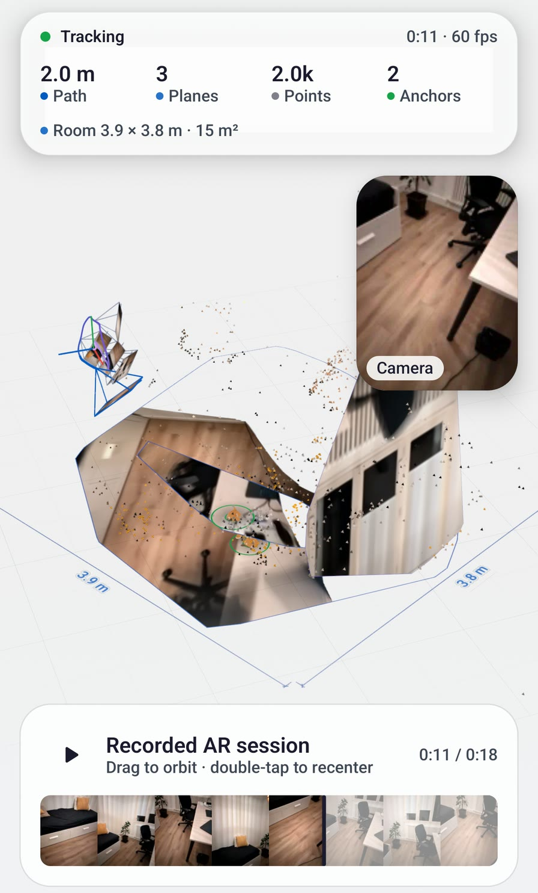
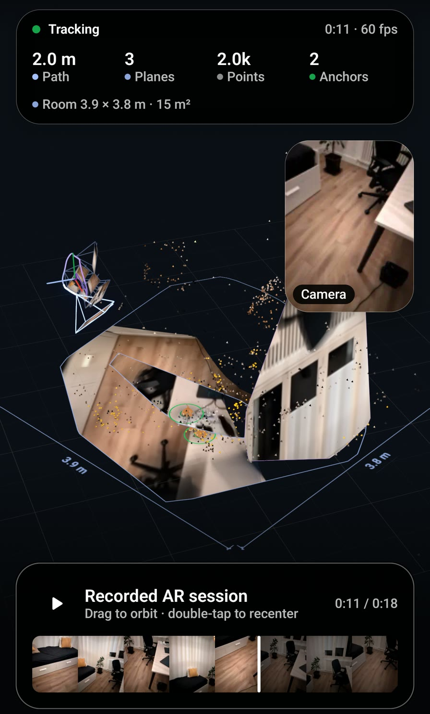

Remember how the room looked
A tenant gets the keys to an empty flat and wants to keep how each room looked that day, to look at again when they move out.


Works today
What you get
- In the demo app: scan a room, stop, and the replay opens — the room rebuilt in 3D, the path you walked, and the camera picture from each moment. Sessions stay on the phone and can be opened again later.
- In your own app, on Android: one call records the walk to a file, one parameter plays that file back as if the phone were standing in the room again.
What it does not do
- The SDK plays the recording back through the camera view. The 3D room you can turn around in the picture is demo code you can copy, not one SDK call.
- On iPhone the SDK records a video of the walk and nothing more. The iPhone demo has its own scan and 3D replay, also as sample code.
- The file the Android code records plays back on Android phones, not on an iPhone.
The smallest version: a Scan button that starts recording, a Replay button that stops and plays the file back.
import io.github.sceneview.ar.ARSceneView
import io.github.sceneview.ar.recording.rememberARRecorder
import java.io.File
@Composable
fun RoomMemory(folder: File) {
val recorder = rememberARRecorder()
var replay by remember { mutableStateOf<File?>(null) } // null = the live camera
Box(Modifier.fillMaxSize()) {
// A session reads its source once: key() rebuilds it when the file changes.
key(replay) {
ARSceneView(
modifier = Modifier.fillMaxSize(),
playbackDataset = replay,
onSessionUpdated = { session, _ -> recorder.recordFrame(session) }
)
}
Row(Modifier.align(Alignment.BottomCenter)) {
Button(onClick = { recorder.start(File(folder, "living-room.mp4")) }) { Text("Scan") }
Button(onClick = { replay = recorder.stop() }) { Text("Replay") }
}
}
} SwiftUI: record a video of the walk. There is no replay on iPhone in the SDK.
SwiftUI: record a video of the walk. There is no replay on iPhone in the SDK.
import SwiftUI
import SceneViewSwift
struct RoomMemory: View {
@StateObject private var recorder = ARRecorder()
@State private var video: URL?
var body: some View {
ARSceneView(planeDetection: .horizontal)
.overlay(alignment: .bottom) {
VStack {
Button(recorder.isRecording ? "Stop" : "Scan") {
Task {
if recorder.isRecording {
video = try? await recorder.stopRecording()
} else {
try? await recorder.startRecording()
}
}
}
// A video of the walk, to keep or to send.
if let video { ShareLink("Keep the video", item: video) }
}
}
}
}Sample source ARRerunDemo.kt RerunScan.kt RerunReplayScene.kt iOS demo: Rerun/